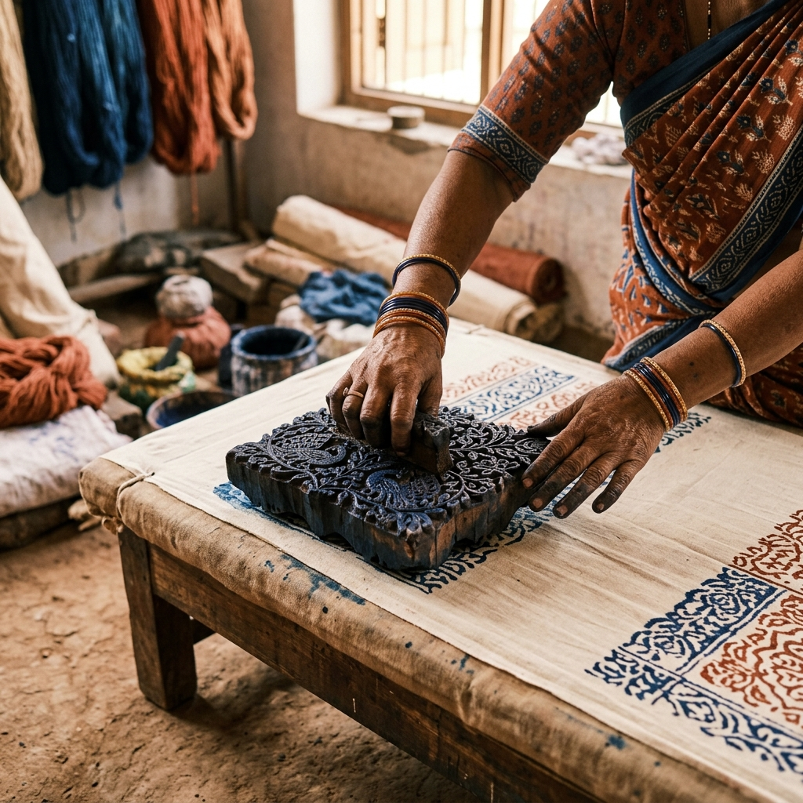
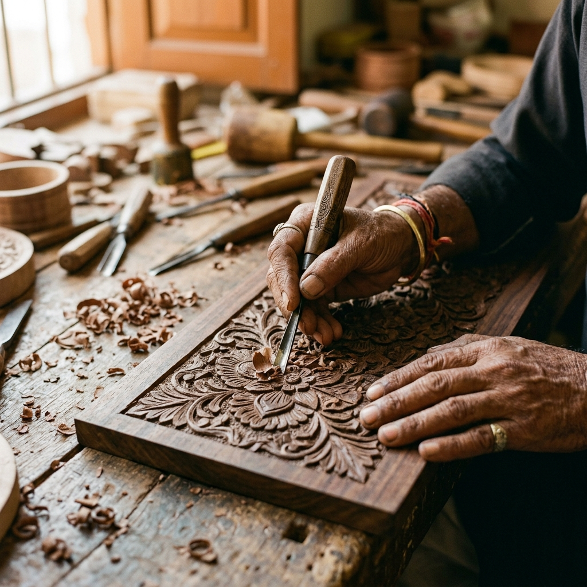
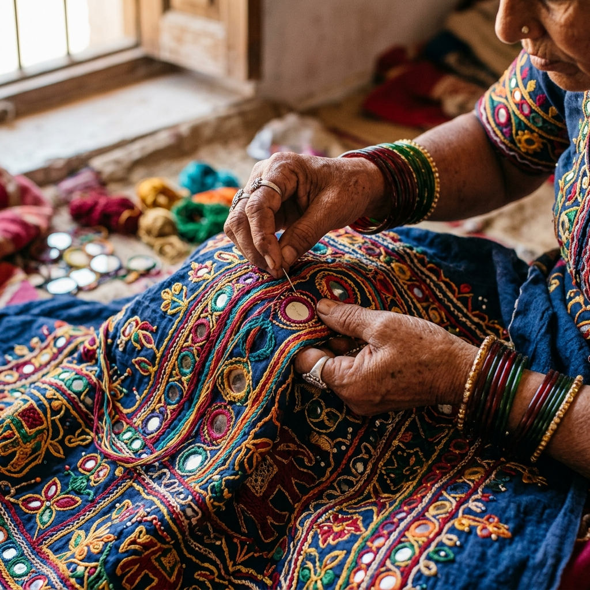

Why Desi District
Connecting you directly with the hands that create
Discover Locally
Find artisans near you using live geolocation. Discover hidden craft traditions in your own neighbourhood.
Direct from Artisan
No middlemen. Fair prices for you, better earnings for artisans. Every rupee supports their craft directly.
Preserve Heritage
Keep centuries-old traditions alive. From Bandhani to terracotta, every purchase protects India's craft legacy.
Made by Hands. Rooted in Heritage.
Every creation carries centuries of tradition, skill, and soul


